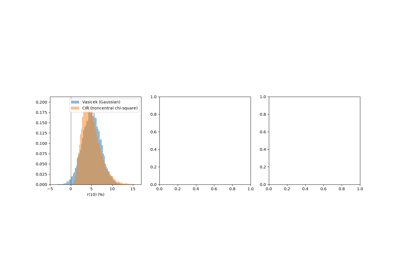
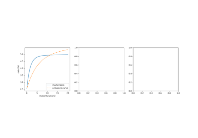
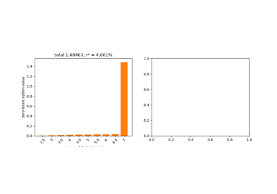
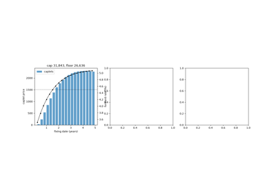
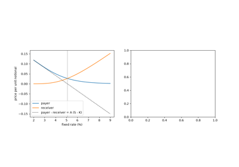

Breakthroughs in Interest-Rate Models#
“All models are wrong, but some are useful.” – George E. P. Box
A bond is a bet on the path of interest rates, and a bond option is a
bet on its volatility. Pricing them took three ideas. The first was to
model the instantaneous short rate as a diffusion and read bond prices
off it, as Merton, Vasicek and Cox, Ingersoll and Ross did in the
1970s and 1980s. The second, from Ho and Lee in 1986, was to take
today’s curve as an input instead of an output, which Hull and White,
Black, Derman and Toy, and finally Heath, Jarrow and Morton turned into
a general no-arbitrage framework. The third was to model the rates the
market actually quotes, LIBOR and swap rates, so that the traders’
Black formulas became exact. This chronology traces the ideas behind
financialkit.interest_rate_models.
1949 – Feynman-Kac: Bond Prices by Monte Carlo#
Richard Feynman’s path-integral formulation of quantum mechanics (1948) wrote the solution of a Schrödinger-type equation as an average over paths. Mark Kac, who heard Feynman lecture at Cornell, proved the rigorous version for the heat equation with a potential: the solution of a parabolic PDE with a killing term is an expectation over Brownian paths of an exponential of an integral. In finance the killing term is the short rate, and the formula says that a bond is the risk-neutral average of its pathwise discount factor. It is the bridge between the PDE and simulation views of every model in this domain.
Implementation: financialkit.interest_rate_models.systems.short_rate.monte_carlo_bond_prices()
simulates any ShortRateModel
through financialkit.integrators, discounts each path with the
trapezoidal rule, and reports the prices with their standard errors next
to the model’s closed form. The example shows the paths, the discount
factors and the \(1/\sqrt{n}\) error.
References: M. Kac, “On Distributions of Certain Wiener Functionals,” Transactions of the American Mathematical Society 65 (1949) 1-13; R. P. Feynman, “Space-Time Approach to Non-Relativistic Quantum Mechanics,” Reviews of Modern Physics 20 (1948) 367-387.
1951 – Feller’s Boundary Condition#
William Feller studied diffusions whose volatility vanishes at a boundary, the square-root process among them, as models of population growth. He showed that whether the process can reach zero depends on a single ratio of drift to noise: when \(2\kappa\theta \ge \sigma^2\) the mean reversion near zero always wins and zero is never reached; below it the process touches zero and is reflected. Thirty years later the condition decided whether the CIR rate could hit zero, and later still whether the Heston variance could.
Implementation: financialkit.interest_rate_models.systems.short_rate.feller_condition()
returns the ratio, and
CIRModel.stationary_shape_scale
the gamma law it shapes. The example samples exact CIR paths on both
sides of the condition and plots the stationary densities.
References: W. Feller, “Two Singular Diffusion Problems,” Annals of Mathematics 54(1) (1951) 173-182.
1973 – Merton’s Gaussian Short Rate#
In the same paper that extended Black-Scholes to dividends and barriers, Robert Merton priced options when the interest rate itself is random. He let the short rate follow an arithmetic Brownian motion, which gave the first closed-form bond prices in a continuous-time stochastic-rate model. The model also showed its own flaw: with no mean reversion the variance of the rate grows without bound, rates go negative with rising probability, and long yields fall to minus infinity through a cubic convexity term.
Implementation: financialkit.interest_rate_models.systems.short_rate.MertonShortRateModel
prices bonds and bond options and simulates the rate. The example shows
the collapsing long yields and the growing probability of negative
rates.
References: R. C. Merton, “Theory of Rational Option Pricing,” Bell Journal of Economics and Management Science 4(1) (1973) 141-183, Section 6.
1977 – Vasicek’s Mean-Reverting Rate#
Oldrich Vasicek, then at Wells Fargo, derived the general bond-pricing equation for any diffusive short rate, with a market price of risk that must be the same for every bond, and solved it for an Ornstein-Uhlenbeck rate. Mean reversion keeps the rate’s variance bounded and gives the curve its three classic shapes, upward sloping, humped or inverted, depending on where today’s rate stands against the long-run level. It was the first equilibrium term-structure model, and its affine bond-price formula became the template for everything that followed.
Implementation: financialkit.interest_rate_models.systems.short_rate.VasicekModel
gives bond prices at any date and state, the long yield, and exact
paths from financialkit.integrators.ou_paths(). The example draws
the three curve shapes and checks twenty maturities against simulation.
References: O. Vasicek, “An Equilibrium Characterization of the Term Structure,” Journal of Financial Economics 5(2) (1977) 177-188.
1985 – The Cox-Ingersoll-Ross Model#
John Cox, Jonathan Ingersoll and Stephen Ross derived the short rate from a general-equilibrium economy, with investors’ preferences and production opportunities, rather than assuming it. The result was a square-root diffusion whose volatility falls with the rate, which keeps rates positive under Feller’s condition. Bond prices remain exponential-affine, and the transition density is a noncentral chi-square, so the model can be simulated exactly. The paper (in circulation since 1977) set the standard for deriving asset prices from first principles.
Implementation: financialkit.interest_rate_models.systems.short_rate.CIRModel
prices bonds and simulates either exactly (scipy.stats.ncx2) or
by full-truncation Euler. The example compares its rate distribution
with a Gaussian model’s and checks both schemes against the closed form.
References: J. C. Cox, J. E. Ingersoll and S. A. Ross, “A Theory of the Term Structure of Interest Rates,” Econometrica 53(2) (1985) 385-407.

Cox-Ingersoll-Ross: the square-root short rate
1986 – The Ho-Lee Model#
Thomas Ho and Sang-Bin Lee reversed the logic of equilibrium models. Instead of producing a curve that never matches the market, their model took today’s discount curve as an input and evolved it on a binomial tree with drift chosen so that every bond is repriced. Derivatives were then priced relative to the bonds that hedge them, as Black-Scholes prices options relative to the stock. In continuous time the model is Merton’s Gaussian rate with a time-dependent drift.
Implementation: financialkit.interest_rate_models.systems.curve_fitted.HoLeeModel
takes a YieldCurve and
gives \(\theta(t)\), bond prices at any date and exact paths. The
example fits a humped Nelson-Siegel curve that no Vasicek curve can
match and reprices it by simulation.
References: T. S. Y. Ho and S.-B. Lee, “Term Structure Movements and Pricing Interest Rate Contingent Claims,” Journal of Finance 41(5) (1986) 1011-1029.

Ho-Lee: the first arbitrage-free term-structure model
1989 – Jamshidian’s Bond Option Formula#
Farshid Jamshidian, at Merrill Lynch, priced a European option on a zero-coupon bond in Vasicek’s model in closed form. The key step was a change of numeraire: measured in units of the bond that matures at the option’s expiry, the forward price of the underlying bond is a lognormal martingale, and the option is Black’s formula on that forward. The same argument works in every Gaussian model; only the bond’s total volatility changes.
Implementation: financialkit.interest_rate_models.systems.bond_options.zero_coupon_bond_option()
calls financialkit.options.black76_price() with the model’s
bond_option_volatility().
The example checks it against Monte Carlo and compares Vasicek,
Hull-White, Ho-Lee and G2++.
References: F. Jamshidian, “An Exact Bond Option Formula,” Journal of Finance 44(1) (1989) 205-209.
1989 – Jamshidian’s Decomposition: Swaptions#
The same paper contained a second idea. An option on a coupon bond is not, in general, a portfolio of options on its coupons. But in a one-factor model every zero-coupon price falls with the short rate, so the coupon bond ends above its strike exactly when the short rate ends below a critical level \(r^*\), and at that level each zero has a natural strike. The coupon bond option splits into zero-coupon options, and since a swaption is an option on a coupon bond, swaptions acquired a closed form in Vasicek, Ho-Lee and Hull-White.
Implementation: financialkit.interest_rate_models.systems.bond_options.coupon_bond_option()
finds \(r^*\) with scipy.optimize.brentq() and returns a
JamshidianResult;
jamshidian_swaption()
prices payer and receiver swaptions. The example shows the
decomposition and checks it against Monte Carlo across strikes.
References: F. Jamshidian, “An Exact Bond Option Formula,” Journal of Finance 44(1) (1989) 205-209.

Jamshidian’s decomposition: swaptions in one-factor models
1990 – The Hull-White Model#
John Hull and Alan White extended Vasicek’s model the way Ho and Lee had extended Merton’s: a time-dependent drift fits today’s curve, while mean reversion keeps rates bounded and makes long yields less volatile than short ones, as they are in the market. Bonds, bond options, caps and swaptions all keep closed forms, and the model’s trinomial tree handles American and Bermudan features. It became the industry’s default one-factor model.
Implementation: financialkit.interest_rate_models.systems.curve_fitted.HullWhiteModel
writes the rate as an exact Ornstein-Uhlenbeck deviation from a
deterministic shift, so simulation has no discretisation bias. The
example contrasts its rate paths and yield volatilities with Ho-Lee’s.
References: J. Hull and A. White, “Pricing Interest-Rate-Derivative Securities,” Review of Financial Studies 3(4) (1990) 573-592.
1990 – The Black-Derman-Toy Tree#
Fischer Black, Emanuel Derman and William Toy built Goldman Sachs’s bond-option model as a binomial tree of lognormal short rates. Rates cannot go negative, the tree is fitted level by level to the market curve, and volatility can vary with time. Pricing is backward induction, so American and callable features cost nothing extra. Calibration by forward induction through Arrow-Debreu prices, made systematic by Jamshidian in 1991, needs one root-finding per level.
Implementation: financialkit.interest_rate_models.systems.curve_fitted.black_derman_toy_tree()
calibrates the tree with scipy.optimize.brentq() and returns a
RateTree, which
prices zero-coupon bonds and European or American bond options. The
example draws a small tree, reprices the curve to machine precision and
values American puts.
References: F. Black, E. Derman and W. Toy, “A One-Factor Model of Interest Rates and Its Application to Treasury Bond Options,” Financial Analysts Journal 46(1) (1990) 33-39; F. Jamshidian, “Forward Induction and Construction of Yield Curve Diffusion Models,” Journal of Fixed Income 1(1) (1991) 62-74.
1990 – The Futures Convexity Adjustment#
A Eurodollar futures contract is marked to market every day; a forward rate agreement pays only at the end. Daily settlement means futures gains are reinvested when rates are high and losses financed when they are low, so the futures rate is the risk-neutral expectation of the future rate, which exceeds the forward rate. Ho-Lee and Hull-White gave the gap in closed form, and it became a standard step in building swap curves from futures quotes.
Implementation: financialkit.interest_rate_models.systems.curve_fitted.futures_convexity_adjustment()
gives the Ho-Lee and Hull-White adjustments. The example reproduces
Hull’s 47.5 basis points and recovers the adjustment as the simulated
expectation of the future rate.
References: J. Hull and A. White, “Pricing Interest-Rate-Derivative Securities,” Review of Financial Studies 3(4) (1990) 573-592; J. C. Hull, Options, Futures, and Other Derivatives, 10th ed. (Pearson, 2018), Section 6.3.
1992 – The Heath-Jarrow-Morton Drift Condition#
David Heath, Robert Jarrow and Andrew Morton stopped modelling the short rate and modelled the whole forward curve, started from today’s market. Their theorem says that once the volatility of forward rates is chosen, the risk-neutral drift is determined: there is exactly one drift that makes discounted bonds martingales. Every arbitrage-free short-rate model is a special case, and the framework made multi-factor and market models possible.
Implementation: financialkit.interest_rate_models.systems.hjm.hjm_drift()
computes the drift for any volatility by quadrature, and
simulate_hjm()
evolves forward curves through
financialkit.integrators.euler_maruyama(), with or without the
drift. The example shows that without it the simulated bonds no longer
match the curve they started from.
References: D. Heath, R. Jarrow and A. Morton, “Bond Pricing and the Term Structure of Interest Rates: A New Methodology for Contingent Claims Valuation,” Econometrica 60(1) (1992) 77-105.
1996 – Duffie-Kan Affine Term Structures#
Darrell Duffie and Rui Kan characterised the models in which bond yields are affine in the state variables: those whose drift and variance are themselves affine. Vasicek and CIR are one-dimensional cases, and any number of Gaussian and square-root factors can be mixed. Bond prices reduce to Riccati ordinary differential equations, which turned term-structure estimation into a tractable econometric problem and led to Dai and Singleton’s classification of affine models.
Implementation: financialkit.interest_rate_models.systems.affine.AffineModel
solves the Riccati ODEs with scipy.integrate.solve_ivp() for any
dimension and simulates the factors. The example recovers Vasicek and
CIR to eleven digits and prices a two-factor model with no closed form.
References: D. Duffie and R. Kan, “A Yield-Factor Model of Interest Rates,” Mathematical Finance 6(4) (1996) 379-406.
1997 – BGM: Caps and Floors by Black’s Formula#
Traders had priced each caplet with Black’s formula on its forward LIBOR rate since the 1980s, with no model to say why. Alan Brace, Dariusz Gatarek and Marek Musiela (and independently Miltersen, Sandmann and Sondermann) built one: under the measure that uses the caplet’s payment bond as numeraire, the simple forward rate is a martingale, and if it is lognormal the market formula is exact. The LIBOR market model became the standard for exotic rate derivatives.
Implementation: financialkit.interest_rate_models.systems.bond_options.cap_floor_price()
prices caps and floors caplet by caplet with
financialkit.options.black76_price(), and
model_cap_floor_price()
prices them in a Gaussian model as bond options. The example shows a
caplet strip, cap-floor parity, and the Black volatilities Hull-White
implies.
References: A. Brace, D. Gatarek and M. Musiela, “The Market Model of Interest Rate Dynamics,” Mathematical Finance 7(2) (1997) 127-155; K. R. Miltersen, K. Sandmann and D. Sondermann, Journal of Finance 52(1) (1997) 409-430.

Brace-Gatarek-Musiela: caps and floors by Black’s formula
1997 – Jamshidian’s Swap Market Model#
Swaptions were also quoted through Black’s formula, applied to the forward swap rate. Jamshidian showed that this too is exact in a model of its own: with the fixed leg’s annuity as numeraire, the forward swap rate is a martingale, and a lognormal one gives the market formula times the annuity. The swap and LIBOR market models cannot both be lognormal at once, but each prices its own instruments exactly, and the pair clarified which numeraire belongs to which product.
Implementation: financialkit.interest_rate_models.systems.bond_options.black_swaption_price(),
with forward_swap_rate()
and forward_swap_annuity().
The example reproduces Hull’s 2.07, verifies payer-receiver parity, and
shows the Black smile a Hull-White model produces.
References: F. Jamshidian, “LIBOR and Swap Market Models and Measures,” Finance and Stochastics 1(4) (1997) 293-330.

Jamshidian’s swap market model: Black swaptions
2001 – Brigo-Mercurio G2++#
In any one-factor model a single shock moves the whole curve, so the 1-year and 30-year yields are perfectly correlated, which the data reject. Damiano Brigo and Fabio Mercurio’s G2++ adds a second Gaussian factor, correlated with the first, and fits the initial curve with a deterministic shift. Everything stays in closed form, and a fast factor negatively correlated with a slow one decorrelates the two ends of the curve. The model is equivalent to Hull and White’s two-factor model of 1994 in a more tractable parameterisation.
Implementation: financialkit.interest_rate_models.systems.two_factor.G2PlusPlusModel
gives bond prices, bond-option volatilities, the yield correlation
structure and simulated factors on correlated increments. The example
maps the correlation between maturities and checks the fitted curve by
simulation.
References: D. Brigo and F. Mercurio, Interest Rate Models – Theory and Practice (Springer, 2001; 2nd ed. 2006), Chapter 4.2; J. Hull and A. White, “Numerical Procedures for Implementing Term Structure Models II: Two-Factor Models,” Journal of Derivatives 2(2) (1994) 37-48.